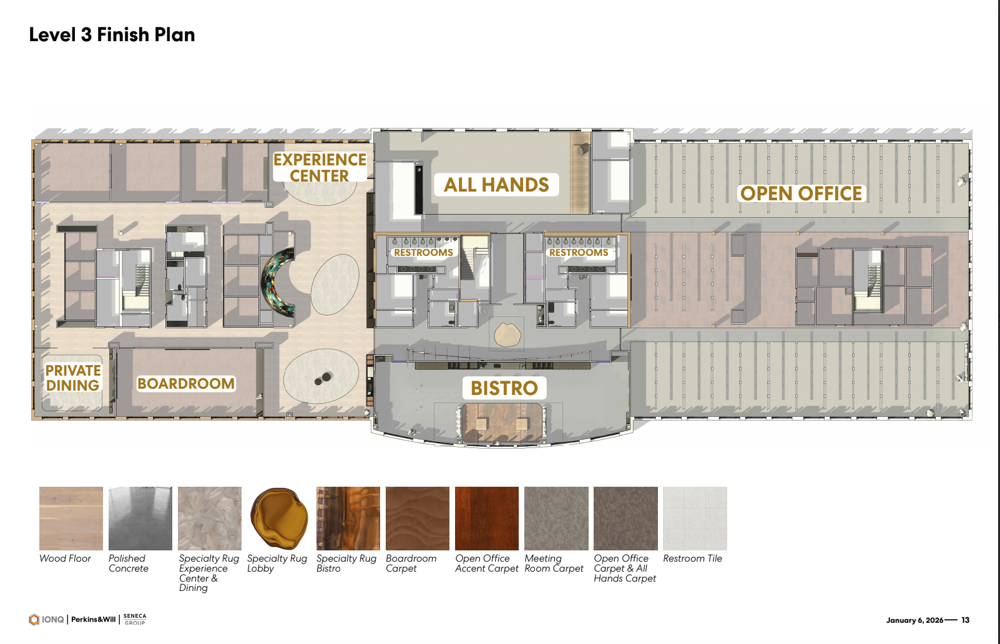

A content and interactive system for IonQ's Washington DC Executive Business Center.
The scenario. IonQ's DC EBC will host Members of Congress, enterprise buyers, and quantum PhDs in the same room. The content has to land for all of them.
Who we are. Futureman is a creative and production studio built for spaces like this—CGI, 3D, motion, interactive systems, and AV integration under one roof. Partnered with SketchDeck (via 24 Seven Agencies) for this engagement.
What we're proposing. Four tiers, $250k to $1.5m. Evergreen spine, swappable skin. Built to last, built to update.
Before concepts, scope, or pricing, we want to confirm we heard IonQ correctly.
On-screen and interactive content for the DC EBC. The storytelling layer that sits on top of whatever physical infrastructure IonQ's facilities vendors build.
Interior design, architecture, or AV hardware procurement. Futureman designs and produces the content. We consult on the hardware. We don't buy it.
Every visitor—Congress to PhD—leaves understanding what IonQ does, why it matters, and why IonQ specifically. Not impressed. Convinced.
The concepts, frameworks, and approaches that follow are directional. They exist to demonstrate how we think about IonQ's story—not to replace the discovery work required to tell it accurately.
Every engagement we take on at this scale begins with a structured Content Strategy and Discovery phase: deep dives with technical SMEs and Marketing leads, a full audit of existing materials, and a narrative framework session that aligns on audience registers, use case hierarchy, and content architecture before a single frame gets designed. What we develop in that phase becomes the foundation everything else is built on.
The ideas you see here are proof we know how to think about the problem. Discovery is how we make sure we're solving the right one.
IonQ is selling a fundamental shift in what's computationally possible. The EBC should make visitors feel that shift—not just understand it.
What follows are directional concepts organized by zone. Each is tagged to indicate which pricing tier it falls within. Concepts without a tier tag are foundational to the experience at every level.

The lobby is the first moment. It needs to do something before anyone opens their mouth. Our instinct is to make it immediately personal—and to turn the act of walking in the door into a demonstration of quantum thinking.
Cameras track visitors as they enter. Their silhouettes are captured, processed through a visual representation of a quantum algorithm, and transformed in real time on the LED wall—their likeness becomes data, gets superposed, and collapses into something new. It's immediate, personal, and a conversation starter before anyone says a word. No explanation needed.
At the Small tier, this is achievable through real-time camera processing using TensorFlow or similar video processing libraries—visitor presence directly influences the content playing on the LED without the complexity of full sensor integration.
A persistent ambient visualization drawn from IonQ's actual processing activity—anonymized job queues, gate fidelity, error correction events. Not a dashboard. Something closer to a heartbeat. The machine is always running. Visitors walk in and the first thing they see is proof.
The dome is the moment the EBC earns its existence. It should be the thing visitors describe when they leave. Our concepts here start from IonQ's actual technology—the trapped ion—because it's genuinely extraordinary and most visitors have never encountered it.
IonQ traps individual ytterbium ions using laser fields. The dome becomes a scaled-up, immersive recreation of that process: individual ions rendered as floating light points, held in place by visualized electromagnetic geometry. Spatial audio hums with the resonant frequencies of the trap. Visitors are standing inside the machine.
A touch or motion event triggers a measurement—the superposition collapses, the system reconfigures, the ions settle. The core concept of quantum measurement, taught without a single word of explanation.
At the Medium tier, visitor presence and movement trigger state changes in the dome environment through sensor detection—transforming the space from ambient display to reactive experience. At the Large tier, this expands into Minority Report-style gesture interactions: visitors controlling content with their hands, multiple visitors influencing different sections of the visualization simultaneously. Think Flight of Passage at Animal Kingdom—the environment responds to you.
Split the dome into two zones. Two visitors interact with opposite particles—one touches a point of light, the other sees it respond instantly, regardless of where they're standing in the space. Simple to experience. Philosophically disorienting in the best way. You can narrate quantum entanglement all day. Feeling it is different.
The Experience Center is where the EBC earns credibility. The lobby creates wonder; the dome creates feeling; this space creates understanding. Our recommendation is a combination of one powerful passive video and one or two interactive installations that reward curiosity without requiring a guide. Details in the two sections that follow.
This is the piece that plays on a loop and still stops people mid-stride on their fifth pass through the space. Below are four directional concepts. The right answer depends on what we learn in Discovery—specifically which register resonates most with IonQ's primary visitor profile and which narrative the brand is most ready to own.
The premise: quantum computing didn't come from nowhere—it came from observing how nature already computes. The video moves through natural systems that are, in a literal sense, solving optimization problems in real time. A murmuration of starlings. A slime mold finding the shortest path through a maze. Protein chains folding into their lowest-energy configuration. Ice crystals forming. Ant colonies routing. Each sequence is visually extraordinary and scientifically accurate—and each one is a quantum phenomenon. The back half of the video introduces IonQ's ion trap: a single atom, suspended. The implicit argument: we didn't invent this. We learned to harness it. No voiceover needed. The edit does the work.
Split-screen, but not gimmicky—more like a diptych. On one side, a classical computer working through a combinatorial problem in real time: numbers cascading, the branching decision tree expanding, the clock running. On the other side: the same problem, quantum. The visual language of the two sides is deliberately different. The classical side is mechanical, grid-based, almost anxious. The quantum side is fluid, probabilistic, almost biological. They both start at the same moment. The quantum side resolves. The classical side is still running when the screen fades. No text needed except, at the end: the problem. And how long each would take. The problems rotate as IonQ's use case library evolves—drug discovery one quarter, logistics optimization the next. Evergreen format, updateable content.
This one is almost purely aesthetic but grounded in IonQ's actual technology. IonQ traps individual ytterbium ions using laser fields—it's one of the most visually singular things in all of computing if you render it properly. The video is a slow, cinematic journey into the ion trap itself. Starting from the outside—the lab, the hardware, the cooling systems—then moving inward, scale shifting, until you're floating alongside individual atoms suspended in light. The atoms are real. The scale is real. The physics is accurate. What's invented is the cinematography and the sound design. It ends on a single ion, perfectly still, holding a qubit in superposition. Tagline: This is where the future is held.
The most emotionally ambitious option. Opens on a patient waiting for a drug that doesn't exist yet. A logistics network failing during a humanitarian crisis. A financial model that can't process the variables fast enough to prevent collapse. These aren't dramatized—they're rendered almost journalistically, quietly. Each unsolved problem is then translated into its computational form: the scale of what classical computing can't resolve. Then IonQ. Not as a savior—as a tool. A powerful, precise, available tool. The video ends not with a solution but with the suggestion of one: the ion trap, running. The work is already happening.
Three installation concepts that extend the interactive layer beyond any single zone. Large-tier additions—these ride on top of the foundational content and sensor systems already in scope at lower tiers.
An installation where visitors become the noise. Microphones, motion sensors, and thermal cameras feed into a live quantum circuit visualization on screen. When visitors are still and quiet, the circuit runs cleanly. When they move and speak, errors cascade—the system degrades in real time. IonQ's differentiation is that they've solved decoherence better than anyone. This installation makes visitors feel the problem before they hear the solution.
The visitor isn't selecting an industry from a menu—they're stepping into one. Floor projection, surround screens, and spatial audio collapse the space around a single real-world problem: a supply chain that can't resolve, a molecule that won't fold, a financial model running out of time. The problem builds visually until it hits its classical ceiling. Then quantum runs. The resolution is the pitch.
Each portal is a self-contained environment, swappable by IonQ without a rebuild, triggerable by a presenter mid-tour or surfaced automatically in a self-guided flow. At the Large tier, tabletop projections and gesture-based interactions extend this into the broader Experience Center floor, giving visitors direct physical engagement with the content. The specific use cases (which industries, which problems, which moments of classical failure) are exactly what we'd excavate in Discovery. IonQ's SMEs and solutions team will know which scenarios land hardest with the visitor profiles walking through that door. We build the vessel. Discovery tells us what to put in it.
A large-format tactile display built around a real optimization problem—nodes and edges representing drug interaction modeling, supply chain routing, or whichever use case is most resonant for IonQ's audience. Visitors drag and attempt to solve it classically, watching the compute time explode exponentially. Then IonQ runs it.
Regardless of tier, the content system is built on one structural principle.
The spine—the physics, the core value proposition, the technology differentiation—doesn't change. The skin—use cases, customer stories, partner logos, government milestones—does. IonQ's business is moving fast; the content architecture needs to move with it. The spine is built once and built to last. The skin is designed for low-lift refresh. This also answers IonQ's scalability question: other EBCs pull the spine and localize the skin without requiring a full rebuild.
Every engagement begins with Discovery and ends with a commissioned, signed-off experience. Below is the six-phase process Futureman uses for a project of this scope. Each phase has defined deliverables and a formal sign-off gate—not because we like paperwork, but because clear gates protect IonQ's investment and keep scope from drifting.
Before we write a word or render a frame, we spend dedicated time with IonQ's scientists, marketers, and space. The most compelling content IonQ can show the world is the story only IonQ can tell. Discovery is how we find it.
Discovery outputs become creative direction. Narrative becomes script. Audience matrix becomes content hierarchy. Site alignment becomes a spatial content map.
The longest phase. Everything approved in Phase 2 gets built.
The phase most agencies underscope. For an EBC with multiple surfaces, interactive systems, sensor triggers, and personalization logic, QA is a critical phase in the process.
The work leaves Futureman's systems and enters the physical space. Coordination-heavy and time-sensitive.
The space is built, the content is loaded. Everything gets tested together as a complete system for the first time.
The content and interactive systems Futureman designs must integrate with the physical AV infrastructure IonQ's facilities vendors procure and install. The range of what "infrastructure" means on a project like this is wide: a well-configured media server and show controller at one end; a full Disguise or Pixera server with a dedicated sensor processing rack at the other. These are not the same project. The content architecture, the interactive logic, the sensor integration—all of it has to be designed around what's actually getting installed.
Until screen hardware, controllers, network topology, and sensor systems are confirmed, some scope elements carry technical dependencies that affect final delivery. This is not a caveat—it's the nature of building a first-of-kind space in a building that doesn't exist yet.
Full technical consulting as part of every tier. We sit at the table with Seneca Group, Perkins Will, and AV integration vendors—not just at handoff, but from the moment we're engaged. We help specify the right equipment for the experience, ensure procurement decisions support the creative vision, and flag conflicts between the architectural plan and the content requirements before they become expensive. That consulting is included in scope.
The sooner Futureman is in the room with facilities vendors, the better the outcome. We'd recommend technical alignment meetings begin in the first two weeks after award—concurrent with Discovery, not after it.
Every concept, tier, and phase above is backed by a production capability set Futureman operates in-house. This is what enables the scope—from a single ambient video to a fully sensor-driven, visitor-personalized environment.
The right tier depends on the depth of experience IonQ wants to deliver and the infrastructure that will be in place to support it.
The team leading this engagement for IonQ.
A selection of work from the Futureman studio.
Placeholder—media + story TBD
Placeholder—media + story TBD
Placeholder—media + story TBD